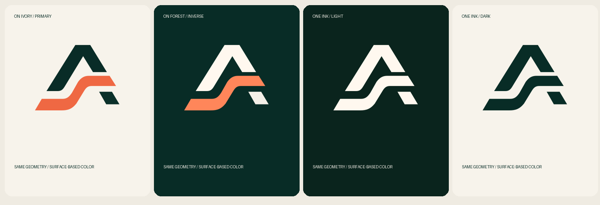
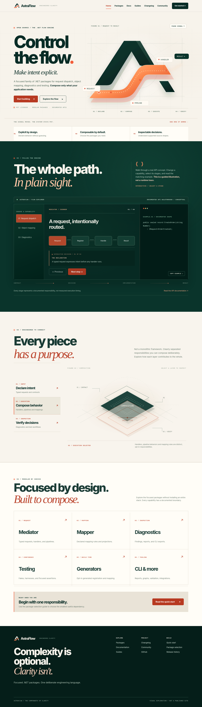

AstraFlow
AstraFlowTHE REVIEW EDITION — NOVEMBER 2026
One identity.
Six crafted routes.
A focused final pass for the approved AstraFlow website direction. Compare every page, verify the corrected logo on dark surfaces, and give Antigravity a concrete React/Next.js implementation contract rather than an open-ended creative prompt.
01 / ACTUAL CHROMIUM RENDERS
Review every route.
02 / NO MORE INVISIBLE LOGO
Correct on
every surface.
The exact same vector paths are now shipped as controlled light, dark and monochrome variants. The footer uses the inverse mark; no CSS brightness filters or redrawn symbol.
Open assets/mark-on-light.svg and assets/mark-on-dark.svg to inspect.


03 / BELOW THE FOLD, NOT JUST THE HERO
Walk the
whole homepage.
Stationary A and typography; one continuous signal. A functional Flow Explorer, responsive interactive assembly and a quiet editorial ecosystem section.


04 / PRODUCTION IMPLEMENTATION
Keep the design. Upgrade the engineering.
The current files are a tested HTML visual prototype, not a deployed production website. Hairline, Motion, MDX docs, true route SEO, accessible interaction primitives, localized routing preparation and real release data belong in the Next.js build — with exact page/component ownership defined in the execution contract.
Open Antigravity instructions ↗